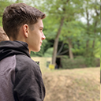
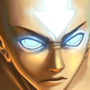
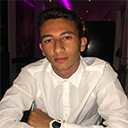
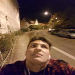
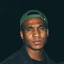
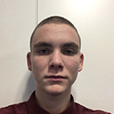
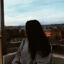
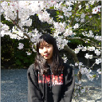
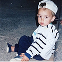

Adrien Joly
Je suis développeur chez Algolia, intervenant à l'EEMI, et pendant mon temps libre, j'aime jouer de la batterie.
| Photo | Nom et bio |
|---|---|
|
Adrien JolyJe suis développeur chez Algolia, intervenant à l'EEMI, et pendant mon temps libre, j'aime jouer de la batterie. |
| Photo | Nom et bio |
|---|---|
[Nom]Je suis [TODO], et j'aime [TODO]. |
|
 |
Ravet CorentinJe suis un étudiant en première année a l'EEMI. J'ai plusieur passion dont la photographie, l'automobile, l'informatique et le cinéma, et j'aime énormément faire de la photo pendant mon temps libre. |
 |
Sophie SongJe suis une étudiante, en première année, à l'EEMI. L'année prochaine, je pense m'orienter vers la spécialisation développement ou interaction design. Je suis française d'origine chinoise et j'aime la culture, l'histoire et la gastronomie de la Chine, la Corée du Sud et le Japon. Je suis considérée comme une personne qui a vraiment très peu de culture générale occidentale. Pendant mon temps libre, j'adore me promener dans Paris ou dessiner, je fais principalement des reproductions. |
|  |
Mathieu GouverneurJe suis étudiant à l'EEMI, en première année, et j'aime le marketing ainsi que le développement. Je suis un grand passionné des sports mécaniques comme la moto. |
Rémi VincentBonjour à tous je m'appelle Rémi Vincent, j'ai 24 ans. Après avoir fini une école d'audiovisuelle en option montage j'ai decidé de completer mes compétences. Mon objectif à l'école est de me faire un carnet d'adresse afin de trouver une alternance dès la deuxième année. Je vous souhaite à tous une très bonne journée ! |
|
Mathilde ChatellierEtudiante à l'EEMI, je suis passionée de cinéma et séries. J'adore l'humour. |
|
Tom CapiezJe suis étudiant à l'EEMI, pendant mon temps libre j'aime jouer aux jeux vidéos et surfer sur le web.. |
|
|  |
Amine BenayadJe suis un étudiant, en première année, à l'EEMI. J'hésite encore entre developpement ou design pour mon orientation future, dans la vie j'aime le foot et la moto. Pendant mon temps libre j'aime sortir, mais aussi allez au cinéma ou encore lire des manga. |
Paul VergnaudJ'ai 21 ans, je suis étudiant en première année à l'EEMI. J'ai suivi une licence de droit à la fac de Nanterre pendant les 3 ans qui ont précédés mon arrivée. J'aime beaucoup la photophaphie et l'informatique, deux activités que j'explore et pratique régulièrement pendant mon temps libre. J'ai aussi été Vice-Président d'une association étudiante l'année dernière. J'ai pu organiser un week-end d'intégration accueillant 300 personnes et une soirée de fin d'année avec plus de 900 étudiants à l'Aquarium de Paris. |
|
|  |
Berrebi SachaBonjour, je suis actuellement en première année a l'EEMI. Après avoir fais une l1 d'économie a la sorbonne puis ayant travaillé une autre année j'ai décidé de m'orienter vers l'EEMI. En effet je pense réellement que le digital garantie un avenir radieux. Je m'intéresse beaucoup a la culture hip hop aux USA, j'essaie d'aller a un maximum de concert, la mode m'intérresse aussi. |
Alice ChaninJe suis étudiante en première année à l'EEMI et j'aime faire de la moto pendant mon temps libre. |
|
|  |
Bouvet MathieuJe suis étudiant en première année, à l'EEMI. Apres avoir raté mon bac j'ai decidé d'aller à l'EEMI et du coup me voila! J'aime manger, et j'hesite entre design ou developpement |
Yann RzennoJe suis un étudiant de première année à l’EEMI. J’ai plusieurs passions, comme par exemple le voyage, la photographie, la moto ou encore l’informatique. Plus tard, j’aimerai créer mon entreprise. |
|
|  |
Xavier IyezeJe suis étudiant en première année à l'EEMI. L'année prochaine, je pense m'orienter vers le web développement. Je suis passioné de photographie, d'informatique ou encore de sport. |
|  |
Paul LaffontJe suis un étudiant en première année à l'EEMI. L'année prochaine, je pense m'orienter en design ou en marketing. Je suis interessé par la musique(piano), le poker et les sport d'equipes (rugby) |
|  |
Inès BensmaineJe suis étudiante en 1ère année à l'EEMI, j'aime le cinéma et la photographie. |
|  |
Cassie-jones JamesJe suis une étudiante, en première année, à l'EEMI. L’année prochaine je vais peut être me diriger dans la spécialité du développement web ou le web design. J'aime beaucoup la danse, les voyages, la nourriture, |
|  |
Custodio HugoJe suis une étudiant à l'EEMI depuis maintenant deux ans. Redoublant, j'envisage l'année prochaine de m'orienter vers du design et rêve d'entreprendre. Actuellement artiste peintre, je suis passionné par l'art et par le fait de créer, en soit. |